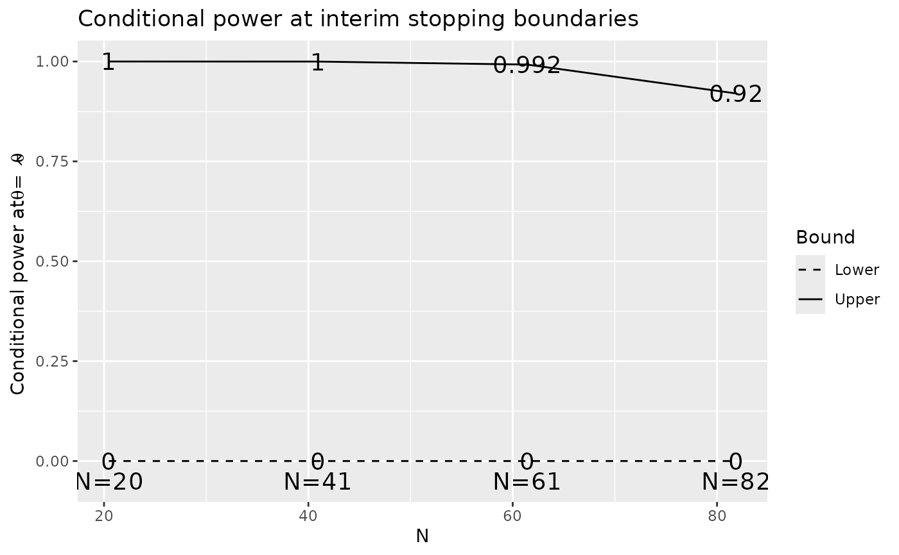
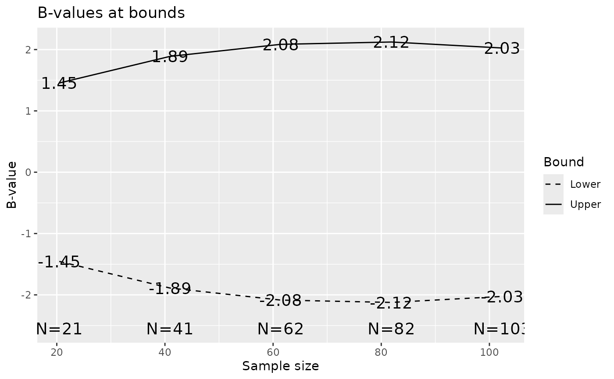

Plots for group sequential designs
plot.gsDesign.RdThe plot() function has been extended to work with objects returned
by gsDesign() and gsProbability(). For objects of type
gsDesign, seven types of plots are provided: z-values at boundaries
(default), power, approximate treatment effects at boundaries, conditional
power at boundaries, spending functions, expected sample size, and B-values
at boundaries. For objects of type gsProbability plots are available
for z-values at boundaries, power (default), approximate treatment effects at
boundaries, conditional power, expected sample size and B-values at
boundaries.
The intent is that many standard plot() parameters will function as
expected; exceptions to this rule exist. In particular, main, xlab,
ylab, lty, col, lwd, type, pch, cex have been tested and work for most
values of plottype; one exception is that type="l" cannot be
overridden when plottype=2. Default values for labels depend on
plottype and the class of x.
Note that there is some special behavior for values plotted and returned for
power and expected sample size (ASN) plots for a gsDesign object. A
call to x<-gsDesign() produces power and expected sample size for
only two theta values: 0 and x$delta. The call plot(x,
plottype="Power") (or plot(x,plottype="ASN") for a gsDesign
object produces power (expected sample size) curves and returns a
gsDesign object with theta values determined as follows. If
theta is non-null on input, the input value(s) are used. Otherwise,
for a gsProbability object, the theta values from that object
are used. For a gsDesign object where theta is input as
NULL (the default), theta=seq(0,2,.05)*x$delta) is used. For
a gsDesign object, the x-axis values are rescaled to
theta/x$delta and the label for the x-axis \(theta / delta\). For a
gsProbability object, the values of theta are plotted and are
labeled as \(theta\). See examples below.
Approximate treatment effects at boundaries are computed dividing the Z-values
at the boundaries by the square root of n.I at that analysis.
Spending functions are plotted for a continuous set of values from 0 to 1.
This option should not be used if a boundary is used or a pointwise spending
function is used (sfu or sfl="WT", "OF", "Pocock" or
sfPoints).
Conditional power is computed using the function gsBoundCP(). The
default input for this routine is theta="thetahat" which will compute
the conditional power at each bound using the approximate treatment effect at
that bound. Otherwise, if the input is gsDesign object conditional
power is computed assuming theta=x$delta, the original effect size
for which the trial was planned.
Average sample number/expected sample size is computed using n.I at
each analysis times the probability of crossing a boundary at that analysis.
If no boundary is crossed at any analysis, this is counted as stopping at
the final analysis.
B-values are Z-values multiplied by sqrt(t)=sqrt(x$n.I/x$n.I[x$k]).
Thus, the expected value of a B-value at an analysis is the true value of
\(theta\) multiplied by the proportion of total planned observations at
that time. See Proschan, Lan and Wittes (2006).
# S3 method for gsDesign plot(x, plottype = 1, base = FALSE, ...) # S3 method for gsProbability plot(x, plottype = 2, base = FALSE, ...)
Arguments
| x | Object of class
|
|---|---|
| plottype | 1=boundary plot (default for 2=power plot (default for 3=approximate treatment effect at boundaries, 4=conditional power at boundaries, 5=spending function plot (only available if 6=expected sample size plot, and 7=B-values at boundaries. Character values for |
| base | Default is FALSE, which means ggplot2 graphics are used. If true, base graphics are used for plotting. |
| ... | This allows many optional arguments that are standard when
calling Other arguments include:
|
Value
An object of class(x); in many cases this is the input value
of x, while in others x$theta is replaced and corresponding
characteristics computed; see details.
Note
The manual is not linked to this help file, but is available in library/gsdesign/doc/gsDesignManual.pdf in the directory where R is installed.
References
Jennison C and Turnbull BW (2000), Group Sequential Methods with Applications to Clinical Trials. Boca Raton: Chapman and Hall.
Proschan, MA, Lan, KKG, Wittes, JT (2006), Statistical Monitoring of Clinical Trials. A Unified Approach. New York: Springer.
See also
Examples
library(ggplot2) # symmetric, 2-sided design with O'Brien-Fleming-like boundaries # lower bound is non-binding (ignored in Type I error computation) # sample size is computed based on a fixed design requiring n=100 x <- gsDesign(k = 5, test.type = 2, n.fix = 100) x#> Symmetric two-sided group sequential design with #> 90 % power and 2.5 % Type I Error. #> Spending computations assume trial stops #> if a bound is crossed. #> #> #> Analysis N Z Nominal p Spend #> 1 21 3.25 0.0006 0.0006 #> 2 41 2.99 0.0014 0.0013 #> 3 62 2.69 0.0036 0.0028 #> 4 82 2.37 0.0088 0.0063 #> 5 103 2.03 0.0214 0.0140 #> Total 0.0250 #> #> ++ alpha spending: #> Hwang-Shih-DeCani spending function with gamma = -4. #> #> Boundary crossing probabilities and expected sample size #> assume any cross stops the trial #> #> Upper boundary (power or Type I Error) #> Analysis #> Theta 1 2 3 4 5 Total E{N} #> 0.0000 0.0006 0.0013 0.0028 0.0063 0.0140 0.025 101.6 #> 0.3242 0.0370 0.1512 0.2647 0.2699 0.1771 0.900 73.7 #> #> Lower boundary (futility or Type II Error) #> Analysis #> Theta 1 2 3 4 5 Total #> 0.0000 6e-04 0.0013 0.0028 0.0063 0.014 0.025 #> 0.3242 0e+00 0.0000 0.0000 0.0000 0.000 0.000# the following translate to calls to plot.gsDesign since x was # returned by gsDesign; run these commands one at a time plot(x)# choose different parameter values for power plot # start with design in x from above y <- gsProbability( k = 5, theta = seq(0, .5, .025), x$n.I, x$lower$bound, x$upper$bound ) # the following translates to a call to plot.gsProbability since # y has that type plot(y)